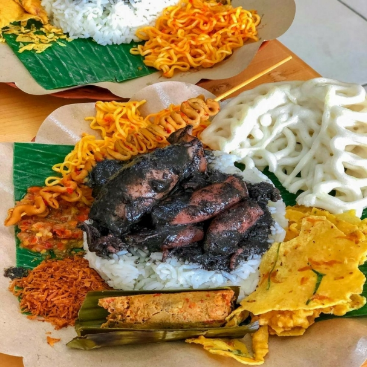
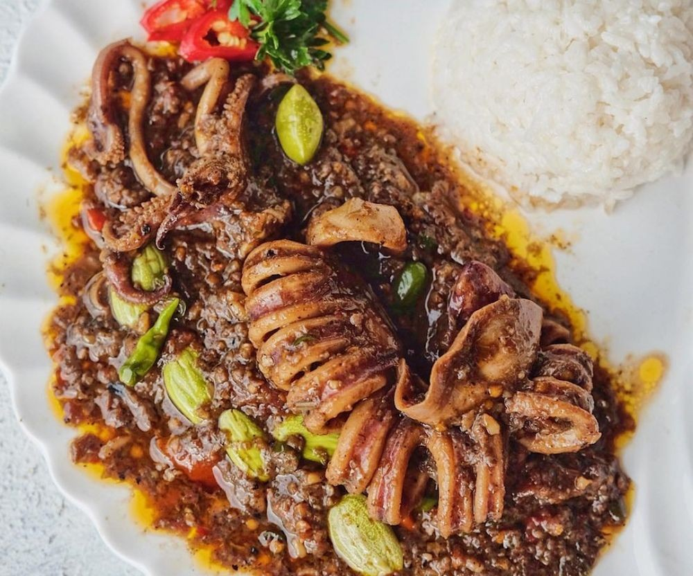
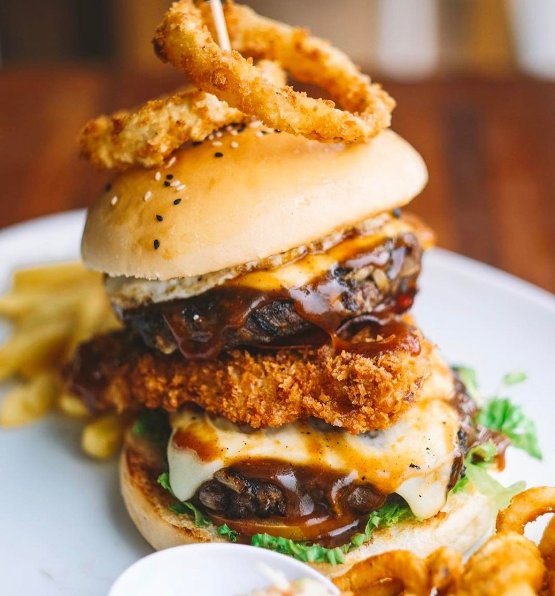

Rekomendasi Tempat Kuliner Terbaik Di Tangerang

1. Nasi Cumi Hitam Pak Kris
Jangan galau lagi cari tempat makan cumi hitam khas Madura yang autentik di Tangerang. Cobalah makan di Nasi Cumi Hitam Pak Kris.
Selain cumbu cumi hitamnya yang medhok, lauk pendampingnya pun lengkap, seperti peyek ebi, sambal, mie goreng, serundeng, hingga sate-satean. Dijamin ketagihan!
Alamat: Jalan Cikini IV Nomor 12A, Jakarta Pusat.

2. Nasi Pedas & Oseng Juragan
Oseng cumi pete XL ini memang menjadi salah satu menu andalan di Nasi Pedas & Oseng Juragan.
Seporsi nasi oseng cumi XL dihargai Rp65 ribu, tapi ukuran cuminya jumbo banget, apalagi kamu bisa pilih level pedas bumbunya. Mantap!
Alamat: Ruko Golden Boulevard Blok W2 Nomor 17, BSD, Tangerang.

3. The Republic Of Burger
Kalau gak mood makan nasi, tapi pengin tetap kenyang, mampirlah ke The Republic of Burger. Mereka punya menu andalan burger raksasa dengan berbagai macam olahan saus yang dibanderol mulai dari Rp30 ribuan.
Bahan-bahannya fresh dan menggunakan patty homemade. Kafe ini sudah buka sejak pukul 10.00 sampai 22.00 WIB, jadi asyik banget jadi tempat nongkrong bareng geng kesayangan.
Alamat: Jalan Boulevard Bintaro Raya, Bintaro Sektor 7, Tangerang.